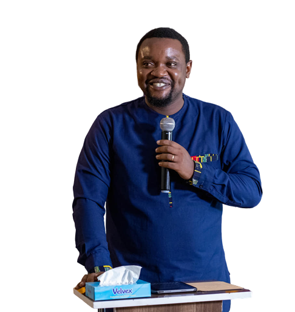

JOHN DOE
Profile Picture

EXECUTIVE SUMMARY
Dependable and enthusiastic information professional trained to work in demanding and robust environments. Seeking to exploit my technical skills and professional experience in information and project management to provide solutions for upcoming challenges.
PROFESSIONAL EXPERIENCE
aug 2017 - sep 2022
- Prepared timely monthly, quarterly, and annual technical reports using the internal reporting tools and the Ministry of Health recommended tools such as DHIS2, Electronic Medical Records, 3PM, Data on Accountability Transparency and Impact (DATIM), as well as Site Improvement through Monitoring System (SIMS)
- Created and maintained databases of the projects to effectively track project implementation and improved efficiency by greater than 30%
- Collated and compiled monthly and quarterly project activity reports and performed data analysis using Excel and SPSS for presentations by technical teams in conferences and stakeholder meetings
- Prepared, and sorted out source documents used in the field sites for data capture and created automated queries to flag out incorrect and missing information in the data entry
KEY SKILLS
- Information management
- An expert in information creation, storage, dissemination and disposition
- Proficient in drafting communications through memos and emails, review critical documents and proposals
- Leadership Management
- Ability to learn and adapt to new technologies, perspectives and work processes
- Able to motivate key project players on project directions and activities
- Technology
- Proficient in Microsoft office, One note for note taking and communication, Remote work applications such as Slack, zoom and Google meet